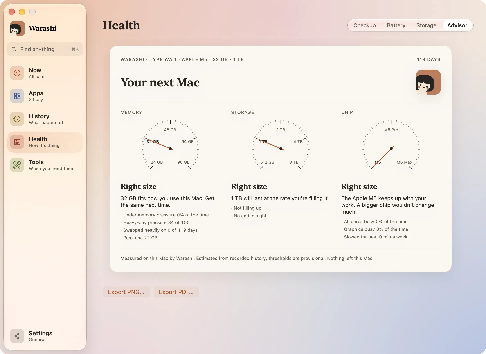
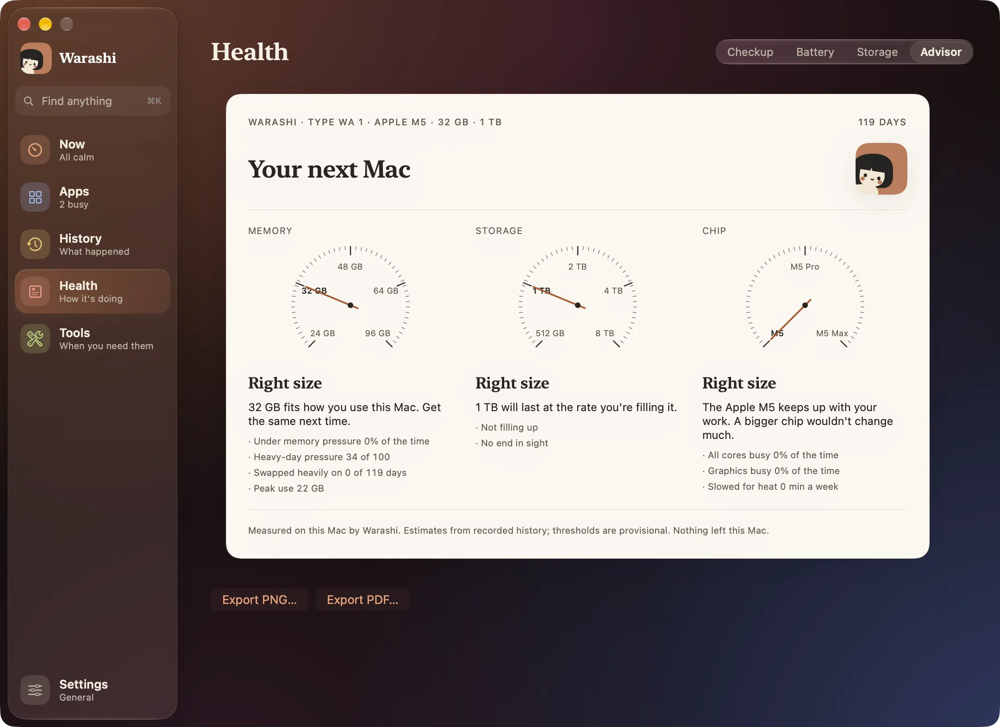

Membeli Mac berarti menebak-nebak: cukupkah 16 GB? Akankah 512 GB penuh? Perlukah chip Pro? Penasihat Upgrade menjawab berdasarkan cara Anda benar-benar memakai Mac ini. Ini adalah tab Penasihat di Kesehatan.
- Jaga Warashi tetap berjalan
Setiap hari Warashi menulis satu baris kecil bukti: tekanan memori, swap, penyimpanan terpakai, menit di bawah beban berat, dan menit yang diperlambat panas. Halaman ini menghitung harinya: Hari ke-12 dari 30.
- Baca tampilan pertama setelah 7 hari
Setelah seminggu Anda mendapat tampilan pertama, ditandai keyakinan rendah. Laporan lengkap tiba setelah 30 hari.
- Buka laporan
Pilih Kesehatan, lalu Penasihat. Tiga dial menjawab Memori, Penyimpanan, dan Chip, masing-masing dengan bukti di bawahnya.


- Ekspor
Klik Ekspor PNG… atau Ekspor PDF… di bawah kartu untuk menyimpan atau membagikannya.
Arti setiap jawaban
- Memori: apakah Anda butuh lebih, dari tekanan memori dan swap di hari tersibuk Anda, dibulatkan ke ukuran yang benar-benar dijual Apple.
- Penyimpanan: seberapa cepat disk Anda terisi, dan apa yang Anda butuhkan untuk tiga tahun dengan laju itu plus ruang lebih.
- Chip: seberapa sering chip berjalan penuh atau melambat karena panas, dan apakah lebih banyak core atau kipas akan membantu.